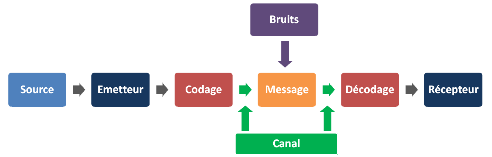

J'ai compris que toute donnée, même la voix ou des images, peut se transmettre à l'aide d'une suite binaire : c'est de la que découle le passage de
communications analogiques à numériques

L'entropie, qui mesure la quantité d'information portée par un message numérique; cette notion est très importante en cryptographie ou en compression de données.